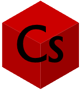

Introducción a la ciberseguridad
Las distintas amenazas a nuestra privacidad en internet, y cómo prevenirlas
Juan Manuel Díaz
- Home
- Introducción
- Artículos:
- Las contraseñas no son débiles, nosotros lo somos
- La verdad sobre los sitios "No seguros"
- Phishing, la verdadera amenaza al navegar por internet
- Man in the Middle y WiFi Pineapples
- "La rebelión de las máquinas" y ataques DDoS
- El anonimato y el negocio de la información
- Ataques de fuerza bruta y los diccionarios de contraseñas
- "Las (des)ventajas de ser invisible"
- El comportamiento humano y el anonimato
- Encuestas
- Conclusión
- Bibliografía